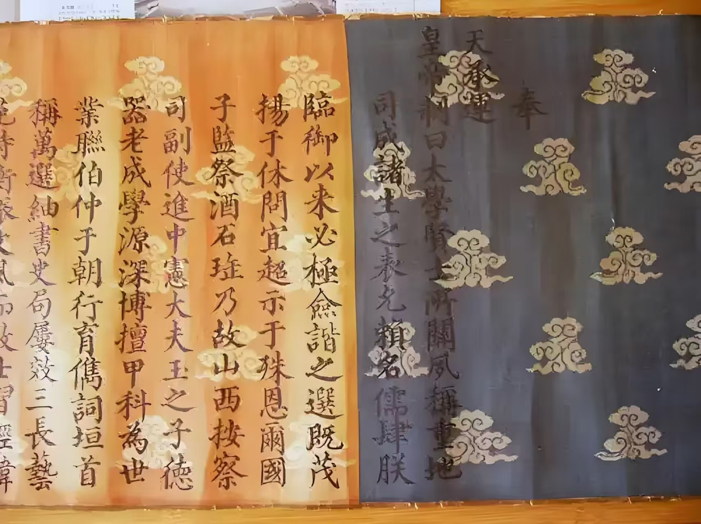

展厅布局
提前了解展厅分布，规划您的参观路线
一层展厅

序厅
贵州教育史馆的入口区域，通过大型浮雕和多媒体展示贵州教育的整体脉络。
古代教育厅
展示贵州从古代到近代的教育发展历程，包括书院、私塾、科举制度等。
民族教育厅
展示贵州丰富多样的民族教育特色，反映各民族教育传统和文化传承。
互动体验区
提供互动体验项目，如传统教育工具的使用、虚拟课堂等。
二层展厅
近现代教育厅
呈现贵州近现代教育的变革与发展，展示新式学校的兴起和教育制度的演变。
红色教育厅
展示贵州在革命时期形成的红色教育传统，包括红军学校、革命根据地的教育实践等。
教师风采厅
展示贵州教育史上杰出教师的事迹和贡献。
多媒体教室
配备先进多媒体设备的教室，用于举办教育主题讲座和培训活动。
三层展厅
当代教育厅
介绍改革开放以来贵州教育取得的辉煌成就，展望未来教育发展方向。
教育科技厅
展示现代教育技术和手段在贵州的应用，如信息化教学、人工智能教育等。
未来教育展望厅
通过虚拟现实和模拟场景，展望未来教育的发展趋势。
观景平台
提供俯瞰整个贵州教育史馆建筑全貌及周边景观的平台。
配套设施
多功能厅
可容纳200人，配备先进音视频设备，用于举办各类活动。
互动体验区
提供丰富的互动体验项目，增强参观趣味性。
休息区
每层均设有休息区，配备舒适的座椅和免费饮用水。
教育商店
销售教育主题纪念品、书籍、文具等。
咖啡厅
提供各类咖啡、茶饮和简餐，是休息和交流的理想场所。
无障碍设施
全馆配备完善的无障碍设施，确保所有游客都能舒适参观。
场馆地图
参观路线建议
路线一：从一层序厅开始，按照楼层由下至上参观，全面了解贵州教育史的脉络。
路线二：根据兴趣选择特定主题展厅参观，如对古代教育感兴趣可重点参观一层的古代教育厅和民族教育厅。
路线三：结合互动体验项目，边参观边体验，增强参观趣味性。